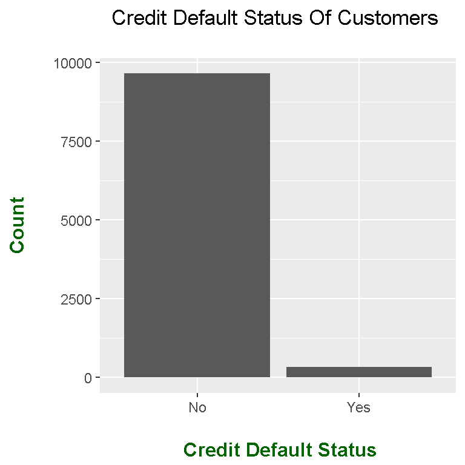

Hi. This page is on using the R programming language for doing logistic regression. In regular linear regression, the response variable is a numeric variable while the response variable in logistic regression is a binary variable.
References include the Udemy Course - R For Data Science & Machine Learning By Jose Portilla and the Introduction To Statistical Learning With R Book.
The packages that are used in R are ISLR, ggplot2 and caTools. From the ISLR library, the Default dataset is used. This default data looks at credit card defaults. The response variable here is the default variable which is either Yes or No.
# Logistic Regression In R
# Reference: Udemy Course - R For Data Science & Machine Learning By Jose Portilla
# Book & Library Reference: Introduction To Statistical Learning With R
# Book Info Link:https://www-bcf.usc.edu/~gareth/ISL/
library(ISLR)
library(ggplot2)
default_data <- Default
# Preview the data:
head(default_data)## default student balance income
## 1 No No 729.5265 44361.625
## 2 No Yes 817.1804 12106.135
## 3 No No 1073.5492 31767.139
## 4 No No 529.2506 35704.494
## 5 No No 785.6559 38463.496
## 6 No Yes 919.5885 7491.559tail(default_data)## default student balance income
## 9995 No Yes 172.4130 14955.94
## 9996 No No 711.5550 52992.38
## 9997 No No 757.9629 19660.72
## 9998 No No 845.4120 58636.16
## 9999 No No 1569.0091 36669.11
## 10000 No Yes 200.9222 16862.95str(default_data)## 'data.frame': 10000 obs. of 4 variables:
## $ default: Factor w/ 2 levels "No","Yes": 1 1 1 1 1 1 1 1 1 1 ...
## $ student: Factor w/ 2 levels "No","Yes": 1 2 1 1 1 2 1 2 1 1 ...
## $ balance: num 730 817 1074 529 786 ...
## $ income : num 44362 12106 31767 35704 38463 ...
From the head(), tail() and str() outputs, we see that there are four columns/variables and 10000 observations. The response variable of interest is the default variable. Credit card defaults are either Yes or No.
With the table() function, counts on the default column can be retrieved.
# Check default column on counts
table(default_data$default)##
## No Yes
## 9667 333
For a visual of the counts, a barplot can be generated with the use of R’s ggplot2 graphics.
# Initial Barplot (No Labels):
ggplot(default_data, aes(x = default)) +
geom_bar() +
labs(x = "\n Credit Default Status", y = "Count\n",
title = "Credit Default Status Of Customers \n") +
theme(plot.title = element_text(hjust = 0.5),
axis.title.x = element_text(face="bold", colour="darkgreen", size = 12),
axis.title.y = element_text(face="bold", colour="darkgreen", size = 12),
legend.title = element_text(face="bold", colour="brown", size = 10)) 
When it comes to logistic regression in R, it is not ideal to keep “Yes and”No" in the default column of the dataset. A function is created such that if the default status is “Yes” it gets converted into 1 and if it is a “No” it gets converted into a 0. This function is then used in a sapply() function on the default column.
# For logistic regression purposes: change No to 0 and Yes to 1 for default column.
# Combine never-worked and without pay groups into unemployed
default_change <- function(def_status){
if (def_status== 'Yes'){
return(1)
}else{
return(0)
}
}
# Use sapply on type_employer column:
# Yes turns into 1 and No turns into 0 for logistic regression.
default_data$default <- sapply(default_data$default, default_change)
The changes can be verified with the use of the table() and str() functions.
# Check with table() and str() functions.
table(default_data$default)##
## 0 1
## 9667 333str(default_data)## 'data.frame': 10000 obs. of 4 variables:
## $ default: num 0 0 0 0 0 0 0 0 0 0 ...
## $ student: Factor w/ 2 levels "No","Yes": 1 2 1 1 1 2 1 2 1 1 ...
## $ balance: num 730 817 1074 529 786 ...
## $ income : num 44362 12106 31767 35704 38463 ...
To fit a logistic regression model in R, use the glm() function with the appropriate formula, family and data. For the family argument, do use binomial(link = "logit") for logistic regression. (Using a different link function is for a different regression model such as linear and poisson.)
# Running logistic regression model
# Use binomial(link = 'logit')
log_model <- glm(formula = default ~ . , family = binomial(link='logit'), data = default_data)
# Run summary of logistic model:
summary(log_model)##
## Call:
## glm(formula = default ~ ., family = binomial(link = "logit"),
## data = default_data)
##
## Deviance Residuals:
## Min 1Q Median 3Q Max
## -2.4691 -0.1418 -0.0557 -0.0203 3.7383
##
## Coefficients:
## Estimate Std. Error z value Pr(>|z|)
## (Intercept) -1.087e+01 4.923e-01 -22.080 < 2e-16 ***
## studentYes -6.468e-01 2.363e-01 -2.738 0.00619 **
## balance 5.737e-03 2.319e-04 24.738 < 2e-16 ***
## income 3.033e-06 8.203e-06 0.370 0.71152
## ---
## Signif. codes: 0 '***' 0.001 '**' 0.01 '*' 0.05 '.' 0.1 ' ' 1
##
## (Dispersion parameter for binomial family taken to be 1)
##
## Null deviance: 2920.6 on 9999 degrees of freedom
## Residual deviance: 1571.5 on 9996 degrees of freedom
## AIC: 1579.5
##
## Number of Fisher Scoring iterations: 8
This next part looks at creating a training data set and a test set from the credit default data. The logistic regression model is with the training data and the test data is with the predict() function.
The sample.split() helps in splitting the data into a training set and into a test set.
# ---------------------------------------------------------------------
# Using test cases for predictions, make training data and test data
library(caTools)## Warning: package 'caTools' was built under R version 3.4.4set.seed(101)
split = sample.split(default_data$default, SplitRatio = 0.70)
train_data = subset(default_data, split == TRUE)
test_data = subset(default_data, split == FALSE)
The glm() function is used again for fitting a logistic regression model. This time the data input is the training data.
# Running the logistic regression model again:
log_model2 <- glm(formula = default ~ . , family = binomial(link='logit'), data = train_data)
summary(log_model2)##
## Call:
## glm(formula = default ~ ., family = binomial(link = "logit"),
## data = train_data)
##
## Deviance Residuals:
## Min 1Q Median 3Q Max
## -2.1874 -0.1384 -0.0546 -0.0200 3.5201
##
## Coefficients:
## Estimate Std. Error z value Pr(>|z|)
## (Intercept) -1.129e+01 6.023e-01 -18.739 <2e-16 ***
## studentYes -3.877e-01 2.864e-01 -1.354 0.176
## balance 5.778e-03 2.793e-04 20.690 <2e-16 ***
## income 1.134e-05 1.002e-05 1.132 0.258
## ---
## Signif. codes: 0 '***' 0.001 '**' 0.01 '*' 0.05 '.' 0.1 ' ' 1
##
## (Dispersion parameter for binomial family taken to be 1)
##
## Null deviance: 2043.8 on 6999 degrees of freedom
## Residual deviance: 1082.6 on 6996 degrees of freedom
## AIC: 1090.6
##
## Number of Fisher Scoring iterations: 8
Any testing data is used for predictions. The predict() function is associated with the test_data and type = "response" is used.
In the ifelse() function, if any probabilities is above 0.5 assign a one and anything below 0.5 assign a 0.
# Model Diagnostics
fitted_probs <- predict(log_model2, newdata = test_data, type = 'response')
fitted_results <- ifelse(fitted_probs > 0.5, 1, 0)
The misclassification error is a percentage where the test_data default values (0 or 1) do not match the fitted results.
Taking one minus the misclassification error gives the accuracy of of the predictions.
# Obtaining the accuracy of predictions:
misClassError <- mean(fitted_results != test_data$default)
print(paste('Accuracy', 1 - misClassError))## [1] "Accuracy 0.972333333333333"
A confusion matrix of counts can be displayed in a table format in R with the use of the table() function of the default column where the fitted probabilities are above 0.5. Predictions are on the top and the actual outcomes are on the rows.
# Confusion matrix of Counts
# (Predictions on top FALSE/TRUE, actual as rows):
table(test_data$default, fitted_probs > 0.5)##
## FALSE TRUE
## 0 2885 15
## 1 68 32